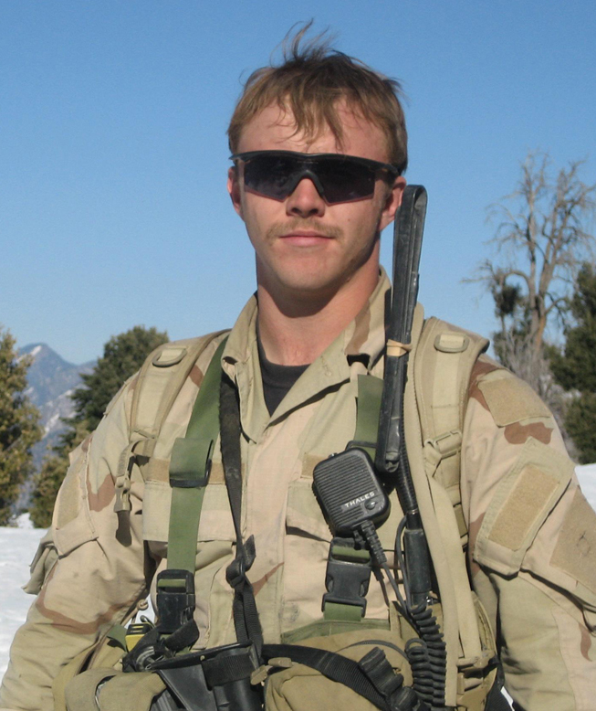

로버트 제임스 밀러
아프간전에서 전사해 명예훈장을 받은 미 육군 특수부대(SF) 대원을 알아보자.

2007년 1월, 아프간에서의 밀러
생애
- 군 입대 전
- 1983년 펜실베니아주의 주도인 해리스버그에서 8명 행제자매 중 둘째로 출생, 5살에 일리노이주로 이사함.
- 8학년(휘튼의 St. michael 스쿨 재학 중) 때, 부모님의 전 성직자(2차대전 당시 독일 해군 의무병)를 인터뷰해서 가산점 받음.
- 아이오와대학교 1년 수학
- 군 입대 후
- SF 후보생 입대
- 2004년 9월 Q 코스(선발과정) 통과
- 마지막 과정(프랑스어) 통과와 함께 SF 패치(tab) 획득 후 하사로 진급
- 제3특전단 배치, 2006년 8월~2007년 3월 Op. Enduring Freedom 수행(아프간전 파병)
- 귀국 후 레인저 과정 수료, 2007년 10월 아프간 2차 파병
- 2008년 1월 탈레반과의 전투 중 전사
전사
- 2008년 1월 25일 아프가니스탄 쿠나르주 고와르데시, 밀러 측 순찰대가 출동함.
- 선두로 선 밀러는 길을 막은 바위를 보고 경계 태세를 강화함.
- 탈레반을 발견한 밀러가 유탄을 쏘면서 전투가 시작됨.
- 적이 고지에 있었음에도, 밀러는 돌격하여 적의 공격을 와해시켰고 적 16명을 사살함.
- 밀러는 총상을 2번 입었음에도 부상당한 아군 지휘관과 대원들을 구했고 결국 전사함.
수상
- 첫 파병 당시: 미 육군 표창 메달 2차례 수상
- 2010년 10월: 명예 훈장
- 2012년: 일리노이주 링컨 훈장